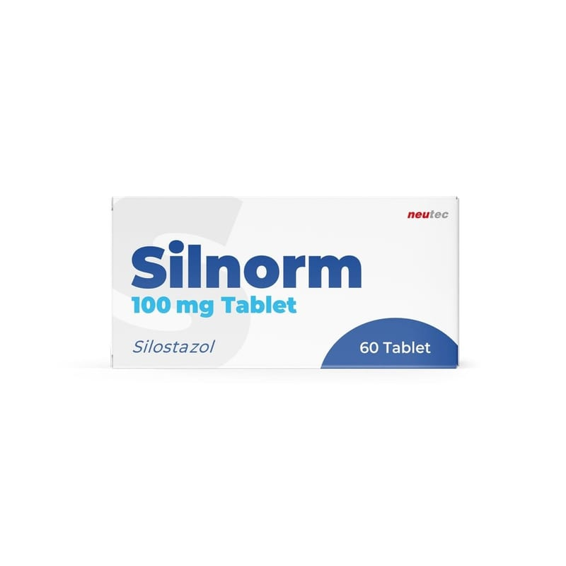

Silnorm 100 mg Tablet, 100 Adet

Ne için kullanılır
KT · Bölüm 12. SİLNORM’u kullanmadan önce dikkat edilmesi gerekenler 3. SİLNORM nasıl kullanılır? 4. Olası yan etkiler nelerdir? 5. SİLNORM’un saklanması
Başlıkları yer almaktadır.
1.SİLNORM nedir ve ne için kullanılır? SİLNORM, 60 ve 100 tabletlik blister ambalajlarda sunulan antitrombotik (kanın pıhtılaşmasını engelleyen) bir ilaçtır. Her bir SİLNORM tablet etken madde olarak 100 mg silostazol içerir.
SİLNORM; Bazı kan damarlarınızın genişlemesini Damarlarınız içerisinde trombosit (kan pulcuğu) olarak adlandırılan ve pıhtılaşmaya aracılık eden hücrelerin aktivitesinin azaltılmasını Kaslarınıza yeterli kan gitmemesine ve bu nedenle bacaklarınızda kramp benzeri ağrılara neden olan dolaşım bozukluğunu tedavi eder.
Ağrısız yürüme mesafenizin artmasına yardımcı olur. Silostazol, sadece yaşam tarzı değişiklikleri yaptıktan sonra (sigarayı bırakma ve egzersizi arttırma gibi) ve diğer uygun müdahalelerden sonra semptomları yeterince iyileşmemiş hastalar için önerilir. Silostazol alırken yaşam tarzınızda yaptığınız değişikliklere devam etmeniz önemlidir.